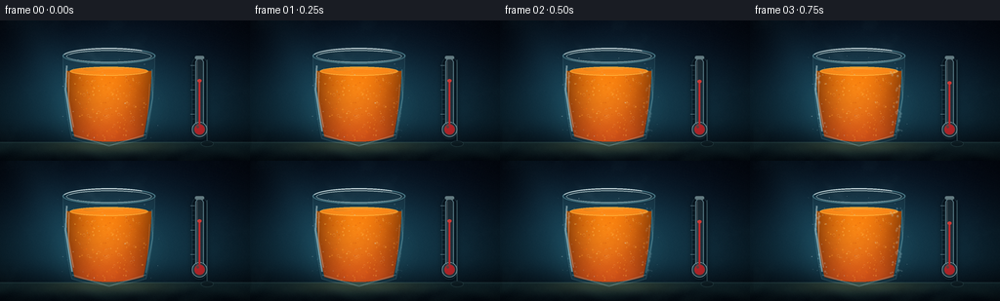
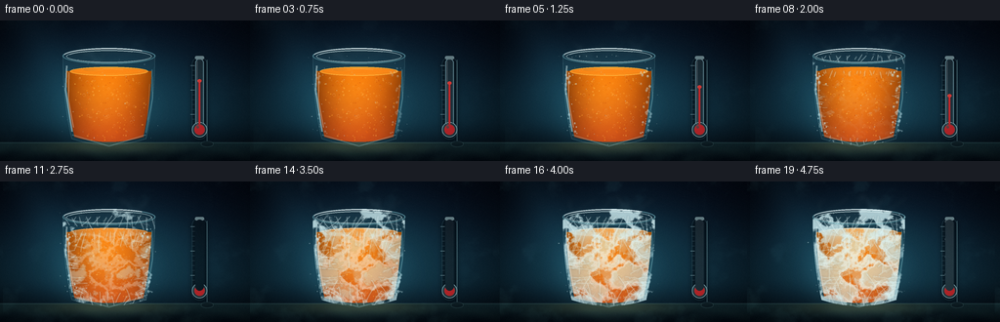
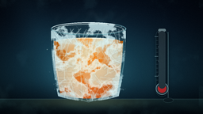
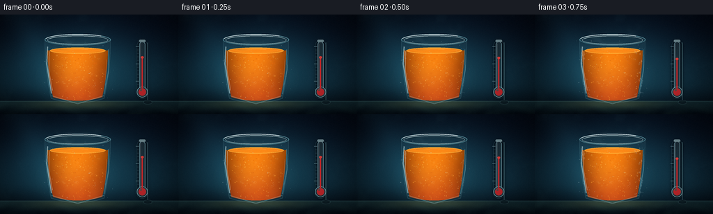

CODING AGENTS AS PIXEL WORLD MODELS
traex/DeepSeek-V4.1-Flash · phygen_092
点击播放 · 原生 RGB 像素
逐轮保存的候选
回放视频、检查图与代码变化。
每份候选均可单独播放。实际图片检查记录在下方工具轨迹中。
候选 01播放与检查图
点击播放 · 原生 RGB 像素


展开代码变化
--- 上一保存版本
+++ 本次保存版本
@@ -0,0 +1,655 @@
+from __future__ import annotations
+
+import math
+import random
+import sys
+from pathlib import Path
+
+import numpy as np
+from PIL import Image, ImageChops, ImageDraw, ImageFilter
+
+import artifact_io
+
+
+CASE_DIR = Path(__file__).resolve().parent
+OUT_W, OUT_H = 256, 144
+SCALE = 4
+W, H = OUT_W * SCALE, OUT_H * SCALE
+N_FRAMES = 20
+
+CX = 446
+RIM_Y = 143
+BODY_BOTTOM = 526
+TABLE_Y = 500
+
+
+def smoothstep(a: float, b: float, x: float | np.ndarray):
+ t = np.clip((x - a) / (b - a), 0.0, 1.0)
+ return t * t * (3.0 - 2.0 * t)
+
+
+def lerp(a, b, t):
+ return a + (b - a) * t
+
+
+def quadratic(p0, p1, p2, count):
+ u = np.linspace(0.0, 1.0, count)[:, None]
+ p0, p1, p2 = (np.asarray(p, dtype=np.float32) for p in (p0, p1, p2))
+ points = (1.0 - u) ** 2 * p0 + 2.0 * (1.0 - u) * u * p1 + u**2 * p2
+ return [tuple(map(float, p)) for p in points]
+
+
+def fractal_noise(seed: int, base_w: int, base_h: int, octaves: int = 6, persistence: float = 0.55):
+ rng = np.random.default_rng(seed)
+ total = np.zeros((H, W), dtype=np.float32)
+ weight_sum = 0.0
+ for octave in range(octaves):
+ nw = max(2, base_w * (2**octave))
+ nh = max(2, base_h * (2**octave))
+ small = rng.random((nh, nw), dtype=np.float32)
+ layer = Image.fromarray((small * 255).astype(np.uint8), "L").resize(
+ (W, H), Image.Resampling.BICUBIC
+ )
+ weight = persistence**octave
+ total += np.asarray(layer, dtype=np.float32) * weight
+ weight_sum += weight
+ total /= weight_sum
+ total -= total.min()
+ total /= max(total.max(), 1e-6)
+ return total
+
+
+def mask_array(draw_fn) -> np.ndarray:
+ image = Image.new("L", (W, H), 0)
+ draw_fn(ImageDraw.Draw(image))
+ return np.asarray(image, dtype=np.uint8)
+
+
+def outer_outline():
+ left = quadratic((CX - 188, RIM_Y + 4), (CX - 191, 308), (CX - 153, 485), 160)
+ bottom = quadratic((CX - 153, 485), (CX, 536), (CX + 153, 485), 180)
+ right = quadratic((CX + 153, 485), (CX + 191, 308), (CX + 188, RIM_Y + 4), 160)
+ return left + bottom + right
+
+
+def inner_outline():
+ left = quadratic((CX - 174, RIM_Y + 13), (CX - 178, 306), (CX - 141, 477), 150)
+ bottom = quadratic((CX - 141, 477), (CX, 519), (CX + 141, 477), 170)
+ right = quadratic((CX + 141, 477), (CX + 178, 306), (CX + 174, RIM_Y + 13), 150)
+ return left + bottom + right
+
+
+def build_masks():
+ outer_points = outer_outline()
+ inner_points = inner_outline()
+
+ def outer(draw):
+ draw.polygon(outer_points, fill=255)
+ draw.ellipse(
+ (CX - 190, RIM_Y - 31, CX + 190, RIM_Y + 35),
+ fill=255,
+ )
+
+ def inner(draw):
+ draw.polygon(inner_points, fill=255)
+ draw.ellipse(
+ (CX - 175, RIM_Y - 22, CX + 175, RIM_Y + 29),
+ fill=255,
+ )
+
+ outer_mask = Image.fromarray(mask_array(outer), "L")
+ inner_mask = Image.fromarray(mask_array(inner), "L")
+
+ liquid_draw_mask = Image.new("L", (W, H), 0)
+ draw = ImageDraw.Draw(liquid_draw_mask)
+ draw.rectangle((CX - 180, 207, CX + 180, 528), fill=255)
+ draw.ellipse((CX - 160, 190, CX + 160, 226), fill=255)
+ liquid_mask = ImageChops.multiply(liquid_draw_mask, inner_mask)
+
+ surface_mask = Image.new("L", (W, H), 0)
+ ImageDraw.Draw(surface_mask).ellipse(
+ (CX - 160, 190, CX + 160, 226),
+ fill=255,
+ )
+
+ return outer_mask, inner_mask, liquid_mask, surface_mask
+
+
+def tinted_mask(mask: Image.Image, color, alpha=255) -> Image.Image:
+ solid = Image.new("RGBA", (W, H), (*color, alpha))
+ if alpha != 255:
+ local = mask.copy()
+ local = Image.eval(local, lambda value: int(value * alpha / 255))
+ solid.putalpha(local)
+ else:
+ solid.putalpha(mask)
+ return solid
+
+
+def edge_from_mask(mask: Image.Image, radius=4) -> Image.Image:
+ eroded = mask.filter(ImageFilter.MinFilter(radius * 2 + 1))
+ return ImageChops.subtract(mask, eroded)
+
+
+def make_background_base():
+ yy, xx = np.mgrid[0:H, 0:W].astype(np.float32)
+ nx = xx / (W - 1)
+ ny = yy / (H - 1)
+
+ top = np.array([5.0, 12.0, 23.0], dtype=np.float32)
+ middle = np.array([12.0, 35.0, 47.0], dtype=np.float32)
+ bottom = np.array([4.0, 11.0, 18.0], dtype=np.float32)
+ lower_mix = smoothstep(0.05, 0.73, ny)
+ color = top[None, None, :] * (1.0 - lower_mix[..., None]) + middle[None, None, :] * lower_mix[..., None]
+ color = color * (1.0 - smoothstep(0.68, 1.0, ny)[..., None]) + bottom[None, None, :] * smoothstep(
+ 0.68, 1.0, ny
+ )[..., None]
+
+ radial = np.exp(-(((xx - (CX + 12)) / 430.0) ** 2 + ((yy - 285.0) / 280.0) ** 2) * 1.7)
+ color += radial[..., None] * np.array([14.0, 41.0, 48.0], dtype=np.float32)
+
+ beam_center = 228.0 + 0.48 * (yy - 230.0)
+ beam = np.exp(-((xx - beam_center) / 105.0) ** 2) * (1.0 - 0.6 * ny)
+ color += beam[..., None] * np.array([5.0, 13.0, 15.0], dtype=np.float32)
+
+ vignette = np.clip(1.18 - 0.48 * (((nx - 0.5) * 1.55) ** 2 + ((ny - 0.47) * 1.45) ** 2), 0.38, 1.0)
+ color *= vignette[..., None]
+
+ table = ny >= (TABLE_Y / H)
+ table_y = np.clip((yy - TABLE_Y) / (H - TABLE_Y), 0.0, 1.0)
+ table_color = (
+ np.array([17.0, 38.0, 43.0], dtype=np.float32)[None, None, :] * (1.0 - table_y[..., None])
+ + np.array([4.0, 12.0, 17.0], dtype=np.float32)[None, None, :] * table_y[..., None]
+ )
+ table_glow = np.exp(-((xx - CX) / 235.0) ** 2) * np.exp(-((yy - 512.0) / 30.0) ** 2)
+ table_color += table_glow[..., None] * np.array([35.0, 31.0, 13.0], dtype=np.float32)
+ color = np.where(table[..., None], table_color, color)
+
+ horizon = np.exp(-((yy - TABLE_Y) / 2.2) ** 2)
+ color += horizon[..., None] * np.array([18.0, 25.0, 24.0], dtype=np.float32)
+
+ streaks = (
+ np.sin(yy * 0.075 + np.sin(xx * 0.009) * 3.1)
+ * np.sin(xx * 0.017 + 1.4)
+ * smoothstep(TABLE_Y + 4, TABLE_Y + 32, yy)
+ )
+ color += streaks[..., None] * np.array([2.4, 4.0, 3.0], dtype=np.float32)
+ return color
+
+
+def make_juice_array(t: float, noise: np.ndarray):
+ yy, xx = np.mgrid[0:H, 0:W].astype(np.float32)
+ yn = np.clip((yy - 198.0) / 300.0, 0.0, 1.0)
+ side = np.clip(np.abs(xx - CX) / 170.0, 0.0, 1.0)
+
+ color = np.empty((H, W, 3), dtype=np.float32)
+ color[..., 0] = 250.0 - 48.0 * yn + 8.0 * (noise - 0.5)
+ color[..., 1] = 116.0 - 44.0 * yn + 10.0 * (noise - 0.5)
+ color[..., 2] = 8.0 + 16.0 * yn + 5.0 * (noise - 0.5)
+
+ core = np.exp(-(((xx - (CX - 18)) / 128.0) ** 2 + ((yy - 315.0) / 150.0) ** 2))
+ color += core[..., None] * np.array([9.0, 28.0, 7.0], dtype=np.float32)
+ edge_darken = 1.0 - 0.38 * side**2
+ color *= edge_darken[..., None]
+
+ cold = smoothstep(0.12, 1.0, t)
+ pale = np.array([255.0, 181.0, 66.0], dtype=np.float32)
+ color = color * (1.0 - 0.16 * cold) + pale[None, None, :] * (0.16 * cold)
+ return np.clip(color, 0.0, 255.0)
+
+
+def make_roots():
+ rng = random.Random(84)
+ roots = []
+
+ def add_root(x, y, angle, length, side_count, family):
+ sides = []
+ for _ in range(side_count):
+ sides.append(
+ {
+ "frac": rng.uniform(0.18, 0.88),
+ "angle": rng.uniform(-0.9, 0.9),
+ "length": rng.uniform(0.12, 0.34),
+ "sign": -1.0 if rng.random() < 0.5 else 1.0,
+ }
+ )
+ roots.append(
+ {
+ "x": x,
+ "y": y,
+ "angle": angle,
+ "length": length,
+ "curve": rng.uniform(-0.34, 0.34),
+ "sides": sides,
+ "family": family,
+ "phase": rng.uniform(0.0, 0.13),
+ }
+ )
+
+ for i in range(16):
+ x = CX - 148 + i * (296 / 15) + rng.uniform(-8, 8)
+ add_root(x, 207 + rng.uniform(-4, 4), math.radians(90 + rng.uniform(-24, 24)), rng.uniform(75, 205), 5, "liquid_top")
+
+ for i in range(9):
+ y = rng.uniform(260, 448)
+ add_root(CX - 151 + rng.uniform(-5, 5), y, math.radians(rng.uniform(-18, 22)), rng.uniform(65, 145), 4, "liquid_left")
+ add_root(CX + 151 + rng.uniform(-5, 5), y + rng.uniform(-18, 18), math.radians(180 + rng.uniform(-22, 18)), rng.uniform(65, 145), 4, "liquid_right")
+
+ for i in range(9):
+ x = CX - 126 + i * 31.5 + rng.uniform(-8, 8)
+ add_root(x, 500 + rng.uniform(-8, 5), math.radians(-90 + rng.uniform(-24, 24)), rng.uniform(55, 130), 3, "liquid_bottom")
+
+ for i in range(18):
+ x = CX - 178 + i * (356 / 17) + rng.uniform(-7, 7)
+ add_root(x, RIM_Y + rng.uniform(-5, 7), math.radians(90 + rng.uniform(-44, 44)), rng.uniform(45, 145), 4, "outer_rim")
+
+ for i in range(10):
+ add_root(
+ CX - 168 + rng.uniform(-8, 7),
+ rng.uniform(260, 470),
+ math.radians(rng.uniform(-28, 30)),
+ rng.uniform(35, 100),
+ 3,
+ "outer_left",
+ )
+ add_root(
+ CX + 168 + rng.uniform(-7, 8),
+ rng.uniform(250, 468),
+ math.radians(180 + rng.uniform(-30, 28)),
+ rng.uniform(35, 100),
+ 3,
+ "outer_right",
+ )
+
+ for i in range(9):
+ x = CX - 130 + i * 32 + rng.uniform(-8, 8)
+ add_root(x, 510 + rng.uniform(-6, 4), math.radians(-90 + rng.uniform(-42, 42)), rng.uniform(35, 90), 3, "outer_bottom")
+ return roots
+
+
+def root_point(root, fraction):
+ angle = root["angle"] + root["curve"] * fraction
+ distance = root["length"] * fraction
+ return (
+ root["x"] + math.cos(angle) * distance,
+ root["y"] + math.sin(angle) * distance,
+ )
+
+
+def draw_roots_layer(roots, families, growth, color, width=2, alpha=125):
+ layer = Image.new("RGBA", (W, H), (0, 0, 0, 0))
+ glow = Image.new("RGBA", (W, H), (0, 0, 0, 0))
+ draw = ImageDraw.Draw(layer)
+ glow_draw = ImageDraw.Draw(glow)
+
+ for root in roots:
+ if root["family"] not in families:
+ continue
+ local_growth = np.clip((growth - root["phase"]) / (1.0 - root["phase"]), 0.0, 1.0)
+ if local_growth <= 0.0:
+ continue
+ count = max(2, int(13 * local_growth))
+ points = [root_point(root, local_growth * i / (count - 1)) for i in range(count)]
+ if len(points) >= 2:
+ draw.line(points, fill=(*color, alpha), width=width, joint="curve")
+ glow_draw.line(points, fill=(*color, max(20, alpha // 3)), width=width * 4, joint="curve")
+ for side in root["sides"]:
+ if local_growth <= side["frac"]:
+ continue
+ base = root_point(root, side["frac"])
+ reveal = np.clip((local_growth - side["frac"]) / 0.28, 0.0, 1.0)
+ side_length = root["length"] * side["length"] * reveal
+ angle = root["angle"] + root["curve"] * side["frac"] + side["sign"] * abs(side["angle"])
+ tip = (base[0] + math.cos(angle) * side_length, base[1] + math.sin(angle) * side_length)
+ draw.line([base, tip], fill=(*color, max(50, alpha - 25)), width=max(1, width - 1))
+ glow_draw.line([base, tip], fill=(*color, max(15, alpha // 5)), width=max(3, width * 3))
+
+ glow = glow.filter(ImageFilter.GaussianBlur(3.0))
+ return Image.alpha_composite(glow, layer)
+
+
+def draw_thermometer(scene, t: float):
+ layer = Image.new("RGBA", (W, H), (0, 0, 0, 0))
+ draw = ImageDraw.Draw(layer)
+ x = 817
+ top = 156
+ bulb_y = 447
+ level = lerp(247, 409, smoothstep(0.02, 0.98, t))
+
+ shadow = Image.new("RGBA", (W, H), (0, 0, 0, 0))
+ ImageDraw.Draw(shadow).rounded_rectangle((x - 32, top - 8, x + 32, bulb_y + 41), radius=32, fill=(0, 0, 0, 90))
+ shadow = shadow.filter(ImageFilter.GaussianBlur(11))
+ scene = Image.alpha_composite(scene, shadow)
+
+ draw.rounded_rectangle((x - 31, top - 7, x + 31, bulb_y + 39), radius=30, fill=(6, 19, 27, 120), outline=(78, 129, 139, 90), width=2)
+ draw.rounded_rectangle((x - 17, top, x + 17, bulb_y), radius=17, fill=(180, 226, 234, 28), outline=(172, 225, 235, 155), width=3)
+ draw.ellipse((x - 31, bulb_y - 31, x + 31, bulb_y + 31), fill=(182, 226, 233, 34), outline=(182, 232, 240, 170), width=3)
+ draw.ellipse((x - 22, bulb_y - 22, x + 22, bulb_y + 22), fill=(210, 239, 242, 28))
+
+ draw.line((x, bulb_y + 1, x, level), fill=(220, 42, 42, 225), width=8)
+ draw.ellipse((x - 8, level - 7, x + 8, level + 7), fill=(236, 61, 54, 225))
+ draw.ellipse((x - 22, bulb_y - 22, x + 22, bulb_y + 22), fill=(211, 39, 42, 220))
+ draw.ellipse((x - 22, bulb_y - 22, x + 22, bulb_y + 22), outline=(255, 103, 89, 120), width=2)
+ draw.ellipse((x - 13, bulb_y - 16, x - 2, bulb_y - 5), fill=(255, 142, 120, 90))
+
+ for index, tick_y in enumerate(range(184, 420, 20)):
+ major = index % 5 == 0
+ length = 17 if major else 10
+ draw.line((x - 20 - length, tick_y, x - 20, tick_y), fill=(181, 221, 226, 150 if major else 90), width=2 if major else 1)
+
+ draw.line((x - 10, top + 10, x - 10, bulb_y - 14), fill=(242, 252, 253, 75), width=3)
+ draw.line((x + 11, top + 17, x + 11, bulb_y - 18), fill=(100, 167, 178, 55), width=2)
+ draw.rounded_rectangle((x - 19, top - 11, x + 19, top + 3), radius=7, fill=(134, 164, 168, 190), outline=(207, 232, 232, 120), width=1)
+
+ frost = smoothstep(0.52, 1.0, t)
+ if frost > 0:
+ for i in range(11):
+ yy = top + 8 + i * 24
+ xx = x - 13 + (i % 3) * 10
+ radius = int(2 + 4 * frost)
+ draw.ellipse((xx - radius, yy - radius, xx + radius, yy + radius), fill=(218, 243, 245, int(70 * frost)))
+ draw.rounded_rectangle((x - 17, top, x + 17, bulb_y), radius=17, fill=(214, 241, 245, int(32 * frost)))
+
+ scene = Image.alpha_composite(scene, layer)
+
+ # A slim metal stand anchors the instrument to the tabletop.
+ stand = Image.new("RGBA", (W, H), (0, 0, 0, 0))
+ stand_draw = ImageDraw.Draw(stand)
+ stand_draw.line((x + 31, top + 5, x + 31, 504), fill=(74, 111, 116, 100), width=5)
+ stand_draw.line((x + 30, top + 6, x + 30, 503), fill=(170, 208, 210, 75), width=2)
+ stand_draw.ellipse((x + 6, 494, x + 57, 518), fill=(9, 22, 28, 155), outline=(76, 116, 120, 100), width=2)
+ return Image.alpha_composite(scene, stand)
+
+
+def draw_condensation(t: float):
+ rng = random.Random(109)
+ layer = Image.new("RGBA", (W, H), (0, 0, 0, 0))
+ draw = ImageDraw.Draw(layer)
+ appear = smoothstep(0.02, 0.35, t) * (1.0 - 0.48 * smoothstep(0.72, 1.0, t))
+ if appear <= 0.01:
+ return layer
+ for _ in range(58):
+ side = -1 if rng.random() < 0.5 else 1
+ x = CX + side * rng.uniform(130, 177)
+ y = rng.uniform(190, 470)
+ radius = rng.uniform(1.5, 5.4)
+ alpha = int(appear * rng.uniform(70, 150))
+ draw.ellipse((x - radius, y - radius * 1.25, x + radius, y + radius * 1.25), fill=(188, 230, 237, alpha))
+ draw.ellipse((x - radius * 0.45, y - radius * 0.65, x + radius * 0.2, y - radius * 0.05), fill=(245, 253, 253, min(210, alpha + 45)))
+ return layer
+
+
+def draw_surface(t: float):
+ layer = Image.new("RGBA", (W, H), (0, 0, 0, 0))
+ draw = ImageDraw.Draw(layer)
+ surface_bbox = (CX - 160, 190, CX + 160, 226)
+ draw.ellipse(surface_bbox, fill=(252, 137, 24, 235), outline=(255, 192, 73, 210), width=3)
+ draw.ellipse((CX - 146, 193, CX + 146, 219), outline=(255, 175, 54, 115), width=2)
+
+ ripple_shift = math.sin(t * math.pi * 2.0) * 3.0
+ draw.arc((CX - 116, 193 + ripple_shift, CX + 112, 219 + ripple_shift), 198, 332, fill=(255, 204, 97, 105), width=2)
+ draw.arc((CX - 74, 198, CX + 74, 216), 206, 322, fill=(255, 226, 148, 95), width=2)
+ draw.ellipse((CX - 104, 196, CX - 26, 207), fill=(255, 205, 102, 54))
+
+ cap = smoothstep(0.28, 0.94, t)
+ if cap > 0:
+ draw.ellipse(surface_bbox, fill=(222, 235, 225, int(82 * cap)))
+ draw.arc((CX - 153, 191, CX + 153, 225), 190, 350, fill=(234, 251, 249, int(195 * cap)), width=3)
+ for i in range(13):
+ xx = CX - 132 + i * 22 + (i % 3) * 4
+ yy = 198 + (i % 4) * 3
+ draw.line((xx, yy, xx + 13, yy + 8), fill=(245, 253, 250, int(95 * cap)), width=2)
+ draw.line((xx + 3, yy + 10, xx + 8, yy - 5), fill=(188, 229, 232, int(85 * cap)), width=1)
+ return layer
+
+
+def make_frost_overlay(t: float, outer_mask: Image.Image, noise: np.ndarray):
+ cold = smoothstep(0.03, 1.0, t)
+ yy, xx = np.mgrid[0:H, 0:W].astype(np.float32)
+ rim_weight = np.exp(-((yy - (RIM_Y + 7)) / 90.0) ** 2)
+ base_weight = np.exp(-((yy - 501.0) / 105.0) ** 2)
+ side_weight = np.maximum(
+ np.exp(-((xx - (CX - 171)) / 55.0) ** 2),
+ np.exp(-((xx - (CX + 171)) / 55.0) ** 2),
+ )
+ weight = np.clip(0.18 + 0.92 * rim_weight + 0.55 * base_weight + 0.30 * side_weight, 0.0, 1.35)
+ threshold = lerp(0.91, 0.43, cold)
+ alpha = smoothstep(threshold, threshold + 0.16, noise) * weight * (0.20 + 0.90 * cold)
+ alpha *= np.asarray(outer_mask, dtype=np.float32) / 255.0
+ alpha = np.clip(alpha * 195.0, 0.0, 205.0).astype(np.uint8)
+ rgba = np.zeros((H, W, 4), dtype=np.uint8)
+ rgba[..., 0] = 210
+ rgba[..., 1] = 241
+ rgba[..., 2] = 245
+ rgba[..., 3] = alpha
+ return Image.fromarray(rgba, "RGBA")
+
+
+def draw_mist(t: float):
+ layer = Image.new("RGBA", (W, H), (0, 0, 0, 0))
+ draw = ImageDraw.Draw(layer)
+ strength = 0.35 + 0.65 * smoothstep(0.08, 0.92, t)
+ for band in range(7):
+ phase = band * 1.27 + t * 2.4
+ x0 = CX - 145 + band * 48
+ y0 = 181 - 15 * t + 6 * math.sin(phase)
+ points = []
+ for step in range(13):
+ s = step / 12.0
+ x = x0 + 36 * math.sin(s * 3.5 + phase) + 24 * s
+ y = y0 - 88 * s - 18 * t * s + 7 * math.sin(phase + s * 5.0)
+ points.append((x, y))
+ alpha = int((10 + 17 * strength) * (0.78 + 0.22 * math.sin(band + t * 4.0)))
+ draw.line(points, fill=(183, 229, 236, alpha), width=14, joint="curve")
+
+ for band in range(3):
+ x0 = CX - 120 + band * 112
+ points = []
+ for step in range(10):
+ s = step / 9.0
+ x = x0 + 42 * s + 10 * math.sin(t * 4.0 + s * 3.0 + band)
+ y = 510 - 18 * s + 3 * math.sin(s * 8.0 + band)
+ points.append((x, y))
+ draw.line(points, fill=(169, 216, 225, int(9 + 12 * strength)), width=17, joint="curve")
+ return layer.filter(ImageFilter.GaussianBlur(10.0))
+
+
+def draw_particles(t: float):
+ layer = Image.new("RGBA", (W, H), (0, 0, 0, 0))
+ draw = ImageDraw.Draw(layer)
+ for index in range(42):
+ phase = index * 2.399 + t * (2.0 + (index % 5) * 0.12)
+ x = CX - 210 + ((index * 89) % 420) + 11 * math.sin(phase)
+ y = 150 + ((index * 61) % 345) - 32 * t + 8 * math.cos(phase * 1.7)
+ if y < 108:
+ y += 345
+ radius = 0.7 + (index % 4) * 0.55
+ alpha = int(30 + 80 * (0.5 + 0.5 * math.sin(phase * 2.0)))
+ draw.ellipse((x - radius, y - radius, x + radius, y + radius), fill=(222, 247, 250, alpha))
+ return layer.filter(ImageFilter.GaussianBlur(0.5))
+
+
+def render_frame(index: int, precomputed):
+ t = index / (N_FRAMES - 1)
+ cold = smoothstep(0.0, 1.0, t)
+ freeze = smoothstep(0.08, 1.0, t)
+ crystal_growth = smoothstep(0.18, 1.0, t)
+
+ outer_mask, inner_mask, liquid_mask, surface_mask = precomputed["masks"]
+ noise_ice = precomputed["noise_ice"]
+ noise_frost = precomputed["noise_frost"]
+ noise_juice = precomputed["noise_juice"]
+ noise_bg = precomputed["noise_bg"]
+ roots = precomputed["roots"]
+
+ bg = precomputed["background"].copy()
+ yy, xx = precomputed["yy"], precomputed["xx"]
+ drift = int(round(22 * math.sin(t * math.pi * 1.4)))
+ fog_noise = np.roll(noise_bg, drift, axis=1)
+ fog = smoothstep(0.56, 0.88, fog_noise)
+ edge = np.clip(1.0 - np.minimum.reduce([xx / 220.0, (W - xx) / 220.0, yy / 170.0, (H - yy) / 160.0]), 0.0, 1.0)
+ frost_bloom = fog * edge * (0.08 + 0.20 * cold)
+ bg += frost_bloom[..., None] * np.array([28.0, 48.0, 47.0], dtype=np.float32)
+ bg = np.clip(bg, 0.0, 255.0)
+
+ scene = Image.fromarray(bg.astype(np.uint8), "RGB").convert("RGBA")
+
+ # Cool ambient haze and a soft orange reflection on the table.
+ haze = Image.new("RGBA", (W, H), (0, 0, 0, 0))
+ haze_draw = ImageDraw.Draw(haze)
+ haze_draw.ellipse((CX - 255, 205, CX + 255, 530), fill=(76, 157, 175, int(16 + 15 * cold)))
+ haze = haze.filter(ImageFilter.GaussianBlur(55))
+ scene = Image.alpha_composite(scene, haze)
+
+ reflection = Image.new("RGBA", (W, H), (0, 0, 0, 0))
+ reflection_draw = ImageDraw.Draw(reflection)
+ reflection_draw.ellipse((CX - 150, 495, CX + 150, 552), fill=(255, 112, 12, int(30 + 10 * t)))
+ reflection_draw.ellipse((CX - 185, 502, CX + 185, 570), fill=(89, 166, 181, int(11 + 10 * cold)))
+ reflection = reflection.filter(ImageFilter.GaussianBlur(18))
+ scene = Image.alpha_composite(scene, reflection)
+
+ scene = draw_thermometer(scene, t)
+
+ # Back glass wall and a faint liquid halo.
+ back_glass = tinted_mask(outer_mask, (125, 202, 213), 15)
+ scene = Image.alpha_composite(scene, back_glass)
+
+ juice_rgb = make_juice_array(t, noise_juice)
+ juice = Image.fromarray(juice_rgb.astype(np.uint8), "RGB").convert("RGBA")
+ juice.putalpha(liquid_mask)
+ scene = Image.alpha_composite(scene, juice)
+
+ # Pulp and bubbles.
+ detail = Image.new("RGBA", (W, H), (0, 0, 0, 0))
+ detail_draw = ImageDraw.Draw(detail)
+ rng = random.Random(311)
+ for _ in range(180):
+ x = CX + rng.uniform(-145, 145)
+ y = rng.uniform(217, 492)
+ radius = rng.uniform(1.0, 3.2)
+ color = rng.choice([(255, 169, 49), (239, 103, 15), (255, 195, 90), (190, 70, 7)])
+ detail_draw.ellipse((x - radius, y - radius, x + radius, y + radius), fill=(*color, rng.randint(55, 125)))
+ for _ in range(34):
+ x = CX + rng.uniform(-125, 125)
+ y = rng.uniform(228, 452)
+ radius = rng.uniform(2.0, 6.0)
+ detail_draw.ellipse((x - radius, y - radius, x + radius, y + radius), outline=(255, 210, 130, rng.randint(35, 80)), width=1)
+ detail_draw.arc((x - radius, y - radius, x + radius, y + radius), 195, 315, fill=(255, 240, 203, rng.randint(55, 110)), width=1)
+ detail.putalpha(ImageChops.multiply(detail.getchannel("A"), liquid_mask))
+ scene = Image.alpha_composite(scene, detail)
+
+ # Freezing haze inside the juice.
+ threshold = lerp(0.93, 0.45, freeze)
+ ice = smoothstep(threshold, threshold + 0.13, noise_ice + 0.10 * freeze * (1.0 - np.clip((yy - 200.0) / 320.0, 0.0, 1.0)))
+ ice_alpha = np.clip(ice * (0.08 + 0.72 * freeze) * 205.0, 0.0, 190.0)
+ ice_alpha *= np.asarray(liquid_mask, dtype=np.float32) / 255.0
+ ice_rgba = np.zeros((H, W, 4), dtype=np.uint8)
+ ice_rgba[..., 0] = 216
+ ice_rgba[..., 1] = 238
+ ice_rgba[..., 2] = 226
+ ice_rgba[..., 3] = ice_alpha.astype(np.uint8)
+ scene = Image.alpha_composite(scene, Image.fromarray(ice_rgba, "RGBA"))
+
+ ridge = 1.0 - np.abs(2.0 * noise_ice - 1.0)
+ vein = smoothstep(0.79, 0.97, ridge) * smoothstep(0.18, 0.9, freeze)
+ vein_alpha = np.clip(vein * 135.0, 0.0, 145.0)
+ vein_alpha *= np.asarray(liquid_mask, dtype=np.float32) / 255.0
+ vein_rgba = np.zeros((H, W, 4), dtype=np.uint8)
+ vein_rgba[..., 0] = 247
+ vein_rgba[..., 1] = 253
+ vein_rgba[..., 2] = 247
+ vein_rgba[..., 3] = vein_alpha.astype(np.uint8)
+ scene = Image.alpha_composite(scene, Image.fromarray(vein_rgba, "RGBA"))
+
+ liquid_roots = draw_roots_layer(
+ roots,
+ {"liquid_top", "liquid_left", "liquid_right", "liquid_bottom"},
+ crystal_growth,
+ (224, 248, 246),
+ width=2,
+ alpha=112,
+ )
+ liquid_roots.putalpha(ImageChops.multiply(liquid_roots.getchannel("A"), liquid_mask))
+ scene = Image.alpha_composite(scene, liquid_roots)
+
+ scene = Image.alpha_composite(scene, draw_surface(t))
+
+ # Frost on the outside of the glass.
+ scene = Image.alpha_composite(scene, make_frost_overlay(t, outer_mask, noise_frost))
+ outer_roots = draw_roots_layer(
+ roots,
+ {"outer_rim", "outer_left", "outer_right", "outer_bottom"},
+ smoothstep(0.12, 1.0, t),
+ (225, 249, 250),
+ width=2,
+ alpha=126,
+ )
+ outer_roots.putalpha(ImageChops.multiply(outer_roots.getchannel("A"), outer_mask))
+ scene = Image.alpha_composite(scene, outer_roots)
+
+ scene = Image.alpha_composite(scene, draw_condensation(t))
+
+ # Glass edges, rim, and specular highlights.
+ glass_lines = Image.new("RGBA", (W, H), (0, 0, 0, 0))
+ glass_draw = ImageDraw.Draw(glass_lines)
+ glass_draw.ellipse((CX - 190, RIM_Y - 31, CX + 190, RIM_Y + 35), outline=(117, 190, 201, 125), width=5)
+ glass_draw.ellipse((CX - 175, RIM_Y - 22, CX + 175, RIM_Y + 29), outline=(216, 248, 249, 180), width=3)
+ glass_draw.arc((CX - 188, RIM_Y - 30, CX + 188, RIM_Y + 34), 192, 316, fill=(248, 255, 255, 225), width=4)
+ glass_draw.arc((CX - 169, RIM_Y - 20, CX + 169, RIM_Y + 27), 197, 305, fill=(242, 253, 250, 145), width=2)
+
+ glass_draw.line([(CX - 173, 185), (CX - 178, 285), (CX - 151, 455)], fill=(226, 250, 250, 118), width=7, joint="curve")
+ glass_draw.line([(CX - 164, 212), (CX - 166, 322), (CX - 145, 438)], fill=(255, 255, 252, 118), width=3, joint="curve")
+ glass_draw.line([(CX + 176, 201), (CX + 178, 320), (CX + 151, 460)], fill=(132, 201, 211, 80), width=5, joint="curve")
+ glass_draw.line([(CX + 166, 260), (CX + 158, 410)], fill=(216, 244, 245, 70), width=2)
+ glass_draw.line([(CX - 151, 468), (CX, 515), (CX + 151, 468)], fill=(164, 221, 226, 72), width=5, joint="curve")
+ glass_lines = glass_lines.filter(ImageFilter.GaussianBlur(0.35))
+ scene = Image.alpha_composite(scene, glass_lines)
+
+ # A thin cool outline helps the glass separate from the dark background.
+ outline = edge_from_mask(outer_mask, 2)
+ outline_layer = tinted_mask(outline, (170, 225, 232), 42)
+ scene = Image.alpha_composite(scene, outline_layer)
+
+ scene = Image.alpha_composite(scene, draw_mist(t))
+ scene = Image.alpha_composite(scene, draw_particles(t))
+
+ # Final color grade: cool shadows, a little glow around the orange, and grain.
+ frame = np.asarray(scene.convert("RGB"), dtype=np.float32)
+ yy2, xx2 = precomputed["yy"], precomputed["xx"]
+ glow = np.exp(-(((xx2 - CX) / 150.0) ** 2 + ((yy2 - 330.0) / 175.0) ** 2))
+ frame += glow[..., None] * np.array([3.0, 1.4, 0.2], dtype=np.float32)
+ frame[..., 2] += (1.0 - glow) * 1.2
+
+ vignette = np.clip(1.05 - 0.28 * (((xx2 / W - 0.5) * 1.6) ** 2 + ((yy2 / H - 0.5) * 1.35) ** 2), 0.56, 1.0)
+ frame *= vignette[..., None]
+ grain = precomputed["grain"]
+ frame += grain[..., None] * 2.2
+ frame = np.clip(frame, 0.0, 255.0).astype(np.uint8)
+
+ image = Image.fromarray(frame, "RGB").resize((OUT_W, OUT_H), Image.Resampling.LANCZOS)
+ return np.asarray(image, dtype=np.uint8)
+
+
+def main():
+ masks = build_masks()
+ yy, xx = np.mgrid[0:H, 0:W].astype(np.float32)
+ rng = np.random.default_rng(713)
+ precomputed = {
+ "masks": masks,
+ "noise_ice": fractal_noise(23, 11, 7, octaves=7, persistence=0.57),
+ "noise_frost": fractal_noise(71, 18, 11, octaves=6, persistence=0.55),
+ "noise_juice": fractal_noise(103, 22, 13, octaves=5, persistence=0.58),
+ "noise_bg": fractal_noise(151, 10, 7, octaves=5, persistence=0.56),
+ "background": make_background_base(),
+ "roots": make_roots(),
+ "yy": yy,
+ "xx": xx,
+ "grain": rng.normal(0.0, 1.0, (H, W)).astype(np.float32),
+ }
+
+ frames = [render_frame(index, precomputed) for index in range(N_FRAMES)]
+ artifact_io.save(frames, CASE_DIR)
+
+
+if __name__ == "__main__":
+ sys.exit(main())
候选 02播放与检查图
点击播放 · 原生 RGB 像素

展开代码变化
--- 上一保存版本
+++ 本次保存版本
@@ -365,7 +365,7 @@
rng = random.Random(109)
layer = Image.new("RGBA", (W, H), (0, 0, 0, 0))
draw = ImageDraw.Draw(layer)
- appear = smoothstep(0.02, 0.35, t) * (1.0 - 0.48 * smoothstep(0.72, 1.0, t))
+ appear = smoothstep(0.07, 0.38, t) * (1.0 - 0.48 * smoothstep(0.72, 1.0, t))
if appear <= 0.01:
return layer
for _ in range(58):
@@ -404,7 +404,7 @@
def make_frost_overlay(t: float, outer_mask: Image.Image, noise: np.ndarray):
- cold = smoothstep(0.03, 1.0, t)
+ cold = smoothstep(0.05, 0.94, t)
yy, xx = np.mgrid[0:H, 0:W].astype(np.float32)
rim_weight = np.exp(-((yy - (RIM_Y + 7)) / 90.0) ** 2)
base_weight = np.exp(-((yy - 501.0) / 105.0) ** 2)
@@ -413,8 +413,8 @@
np.exp(-((xx - (CX + 171)) / 55.0) ** 2),
)
weight = np.clip(0.18 + 0.92 * rim_weight + 0.55 * base_weight + 0.30 * side_weight, 0.0, 1.35)
- threshold = lerp(0.91, 0.43, cold)
- alpha = smoothstep(threshold, threshold + 0.16, noise) * weight * (0.20 + 0.90 * cold)
+ threshold = lerp(1.02, 0.43, cold)
+ alpha = smoothstep(threshold, threshold + 0.16, noise) * weight * (0.04 + 1.06 * cold)
alpha *= np.asarray(outer_mask, dtype=np.float32) / 255.0
alpha = np.clip(alpha * 195.0, 0.0, 205.0).astype(np.uint8)
rgba = np.zeros((H, W, 4), dtype=np.uint8)
候选 03播放与检查图
可观测工具轨迹
实际执行的命令与返回图片。
命令 1exit 0
/bin/bash -c "pwd && rg --files -g 'prompt.txt' -g 'GENERATION_RULES.md' -g 'task_spec.json' -g '"'!node_modules'"'"
命令 2exit 0
/bin/bash -c 'ls -la'
命令 3exit 0
/bin/bash -c 'cat prompt.txt'
命令 4exit 0
/bin/bash -c 'cat GENERATION_RULES.md'
命令 5exit 0
/bin/bash -c 'cat task_spec.json'
命令 6exit 0
/bin/bash -c "sed -n '1,240p' artifact_io.py"
命令 7exit 0
/bin/bash -c 'python generate.py'
命令 8exit 0
/bin/bash -c 'ls -lh generate.py pixels.npz index.html inspection.png transition_check.png frames/00.png frames/19.png'
命令 9exit 0
/bin/bash -c "python - <<'PY'
from PIL import Image
import numpy as np
from pathlib import Path
fs=sorted(Path('frames').glob('*.png'))
a=[np.asarray(Image.open(p).convert('RGB'),dtype=np.int16) for p in fs]
print('frames',len(a),'shape',a[0].shape)
print('mean rgb first/last', a[0].mean((0,1)).round(1), a[-1].mean((0,1)).round(1))
print('adjacent MAE', [round(float(np.abs(a[i]-a[i-1]).mean()),2) for i in range(1,len(a))])
print('first-last MAE',round(float(np.abs(a[-1]-a[0]).mean()),2))
PY"命令 10exit 0
/bin/bash -c 'python generate.py'
命令 11exit 0
/bin/bash -c "python - <<'PY'
import json, base64, wave
from pathlib import Path
from PIL import Image
import numpy as np
p=Path('.')
spec=json.loads((p/'task_spec.json').read_text())
data=np.load(p/'pixels.npz')['pixels']
print('pixels', data.shape, data.dtype, 'range', int(data.min()), int(data.max()))
html=(p/'index.html').read_text()
print('player', len(html), 'embedded', '__DATA__' not in html, 'deltas', html.count('deltas'))
print('png frames', len(list((p/'frames').glob('*.png'))))
print('first pixel frame', tuple(int(v) for v in data[:, :, 0].reshape(3, -1)[:,0]))
PY"命令 12exit 0
/bin/bash -c "python -m py_compile generate.py && python - <<'PY'
from pathlib import Path
required=['generate.py','pixels.npz','index.html','inspection.png','transition_check.png']
for name in required:
p=Path(name)
print(name, p.exists(), p.stat().st_size if p.exists() else 0)
PY"视觉工具实际返回图片 1

视觉工具实际返回图片 2

视觉工具实际返回图片 3

视觉工具实际返回图片 4

保存候选 3 份；完成命令 12 次；可验证图片返回 4 张。原始 API 响应与完整日志保留在本地。